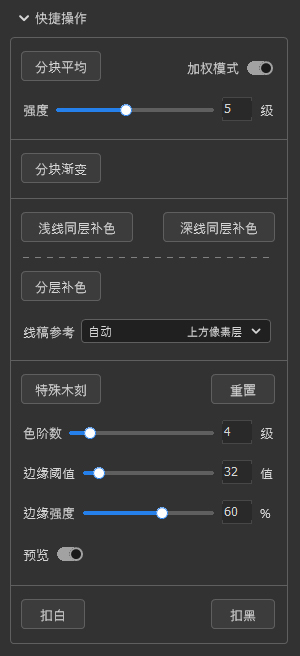
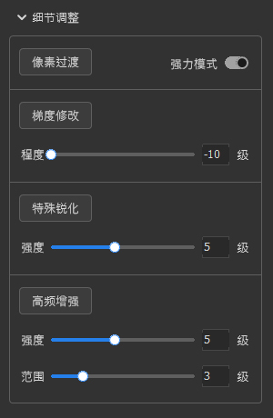
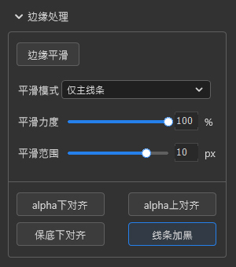
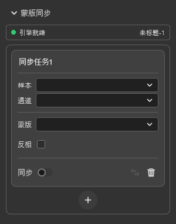
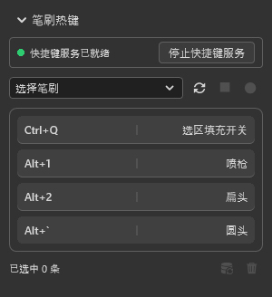

绘画工具箱 使用说明
一组针对「选区像素」的批处理算法（分块均值、补色、木刻、锐化、边缘平滑、alpha 对齐、扣白 / 扣黑等），一个「蒙版同步」引擎，以及「笔刷热键」服务：用全局快捷键直接切换笔刷，无需录制动作。
1. 面板概览
绘画工具箱是 JWautofill 的第二面板，提供选区像素级的批量处理与自动化。所有功能受授权门控：未激活且非试用时，执行任一处理器前会提示先到选区填充面板完成授权。
能力三大块
- 选区像素算法：分块平均 / 补色 / 木刻 / 锐化 / 边缘平滑 / alpha 对齐 / 扣白扣黑等。
- 蒙版同步引擎：把某图层通道实时复制到目标蒙版（事件驱动 + 兜底轮询）。
- 笔刷热键：通过快捷键服务提供的 Windows 全局快捷键，直接在画布上切换笔刷，无需录制动作。

2. 分区与布局
面板内容由若干分区（section）组成，默认顺序为：快捷操作 → 细节调整 → 边缘处理 → 蒙版同步；「笔刷热键」分区渲染在最后。
- 分区可拖拽排序、折叠 / 展开、隐藏 / 显示（见第 8 节菜单）。
- 「复位分区顺序」可恢复默认顺序与默认子功能。
3. 快捷操作
分块平均
按网格对选区分块做加权平均降噪。
| 参数 | 说明 |
|---|---|
| 加权模式 | 开关；开启后中心权重更高。 |
| 强度 | 1–10 级（开启加权模式后显示）。 |
分块渐变
对每个不相连选区（连通块）分别采样一次渐变颜色填充；渐变取自主面板「渐变设置」的最终预览（含角度与反向）。
浅线 / 深线同层补色
| 模式 | 说明 |
|---|---|
| 浅线同层补色 | 线稿与填充同层、线比填充浅时，只传播较深的内部填充色；尖角 / 缝隙 / 孔洞填实（alpha→255）。 |
| 深线同层补色 | 同层、线比填充深时，只传播较浅的内部填充色。 |
分层补色
线稿与填充不同层时，以线稿轮廓引导补全。下方「线稿参考」下拉默认「自动」= 当前层上方最近像素层，可手动指定（选项标注「上方像素层」）。
特殊木刻
木刻量化 + 透明 / 半透明边缘按强度叠加木刻。
| 参数 | 说明 |
|---|---|
| 重置 | 右侧按钮，恢复默认。 |
| 色阶数 | 2–16 级。 |
| 边缘阈值 | 0–255 值。 |
| 边缘强度 | 0–100%。 |
| 预览 | 开关；参数变化 300ms 内自动刷新预览，关闭时还原基线像素。 |
扣白
仅普通像素层。Ctrl+点击 RGB 载入亮度选区 → Delete 清亮部 → 复制 N 份合并增强 alpha，把白底半透明内容抠回透明底。
扣黑
同上，但用反色法（先 Invert 转成白底问题，走扣白流程，再 Invert 回来），把黑底半透明内容抠回透明底。
4. 细节调整
像素过渡
特制类高斯模糊过渡，屏蔽 alpha=0 像素以保护形状。
| 参数 | 说明 |
|---|---|
| 强力模式 | 开关；自动估算等效中间值半径，开启后隐藏半径 / 强度。 |
| 半径 | 5–20px（普通模式）。 |
| 强度 | 1–5 级（普通模式）。 |
梯度修改
程度 -10 ~ 10 级：修改选区内梯度形态（负 = 放缓，正 = 陡峭），同时作用于颜色与不透明度过渡。
特殊锐化
强度 1–10 级；更「硬」的局部锐化，强化过渡边缘。
高频增强
强度 1–10 级、范围 1–10 级；提升细小纹理与微对比。

5. 边缘处理
边缘平滑
「平滑模式」下拉切换两种行为：
| 模式 | 参数 |
|---|---|
| 仅色块边界 | 中间值平滑 + 边缘渐隐；显示「中间值半径」10–30px。 |
| 仅主线条 | 沿切线方向平滑；显示「平滑力度」0–100%、「平滑范围」3–12px。 |
alpha 对齐（三档）
| 档位 | 说明 |
|---|---|
| alpha 下对齐 | 统一半透明笔刷交叉点不透明度，消除交汇处深色点。 |
| alpha 上对齐 | 把线条上偏淡 / 断点拉高到主体水平（对称，只增不减）。 |
| 保底下对齐（alpha 对齐含背景） | 用于低透明度背景（如 alpha=50 色块）上画线，统一交叉凸起同时保护背景与线条自身。 |
线条加黑
增强边缘线条 alpha，使轮廓更清晰。仅普通像素层；背景层会提示「请选择不透明底的线稿图层！」。

6. 蒙版同步
把某图层通道实时复制到目标蒙版。顶部「引擎状态条」显示状态点 + 文字（引擎就绪 / 引擎初始化中…）+ 文档名 + 任务数。
单条同步任务
| 控件 | 说明 |
|---|---|
| 样本 | 像素 / 调整 / 背景图层，或带蒙版的图层组。 |
| 通道 | 灰阶 / R / G / B / A / 蒙版 / 色相 / 饱和度（背景层只有灰阶/R/G/B/色相/饱和度；调整层无 A/蒙版；普通像素层全有；带蒙版组只能取蒙版）。 |
| 蒙版 | 目标层须带蒙版。 |
| 反相 | 开关，取 255-值。 |
| 同步 / 立即同步 / 删除 | 同步开关（事件驱动 + 兜底轮询）、立即同步图标、删除图标；双击可重命名。 |
底部「+」新建同步任务（空态显示「点击 + 新建同步任务」）。每条任务有「上次同步状态」行，如「已写入蒙版 12:30:01」或「未配置完成：请选择样本图层、通道与目标蒙版」。

7. 笔刷热键（快捷键服务）
分区标题「笔刷热键」。原理：通过「快捷键服务」实现 Windows 全局快捷键，直接在画布上按快捷键切换笔刷——无需录制 Photoshop 动作。
总开关（选区填充开关）
快捷键列表里的一条特殊条目：动作固定为「切换选区填充主开关」、名称显示「选区填充开关」、默认组合键 Ctrl+Q。它在配置中长期存在；「解绑」是把组合键置空（不真正删除），需要重新指定时去主面板菜单。
笔刷 → 快捷键绑定
- 在「选择笔刷」下拉中选一支笔刷（自动读取 Photoshop 笔刷预设并识别类型：画笔 / 混合器画笔 / 涂抹等；若无法自动读取，可手动输入笔刷预设名，需与 Photoshop 中的名称完全一致）。
- 点红色录制圆点 → 快捷键服务用 Windows 全局键盘钩子捕获组合键（可绑 A–Z、0–9、F1–F24、符号键、方向 / 空格 / 回车 / 退格 / Tab / Insert / Delete / Home / End / PageUp / PageDown、小键盘 Num0–9）→ 录完保存为「应用笔刷」条目。
- 录制中可点「停止」方块取消（等同 Esc）；Esc 亦可取消录制。
连接与状态
状态条显示「快捷键服务已就绪 / 处理中… / 未启动」（绿点 / 黄点）。右侧按钮「启动快捷键服务 / 停止快捷键服务」：
- 启动：在后台启动快捷键服务（无窗口、自动注册开机自启）。
- 停止：让快捷键服务退出，便于卸载。
列表与多选
显示「组合键 丨 名称」；空态「尚未绑定任何快捷键」。支持单击 / Ctrl+单击 / Shift+单击 多选；底部「已选中 N 条」+「重录」（仅选中单条可用）+「删除」（主开关条目为「解绑」而非删除）。
按快捷键后会有即时提示：「选区填充开关已开启/关闭」或「已切换笔刷『笔刷名』」；若失败则会提示检查笔刷名是否与 Brushes 面板一致。
卸载快捷键服务
优先让快捷键服务自行移除（取消开机自启并删除安装目录）；未连接时回退到卸载脚本。成功提示「已卸载快捷键服务：开机自启已移除，安装目录已删除。」

9. 授权与试用
面板顶部有授权状态横幅，由共享授权状态驱动（与选区填充面板同步）：
| 状态 | 横幅 |
|---|---|
| 试用中且剩余天数 > 0 | 绿点 + 「试用还剩 N 天」。 |
| 试用结束 / 未激活 | 红点 + 「需要在选区填充面板激活」。 |
- 未授权且非试用时，面板在横幅下方覆盖锁定遮罩，隐藏全部可编辑控件，必须到选区填充面板完成授权。
- 每次执行处理器前都会先检查授权状态：未授权且非试用会提示并阻断。
- 本面板本身不开授权对话框，仅同步状态。
10. 常见问题
点击处理器没反应？
工具箱功能受授权门控，请先到选区填充面板激活或开始试用。
绑了笔刷热键但切换不了？/ 切换的不是我要的那支？
检查笔刷名是否与 Brushes 面板完全一致；确认「快捷键服务」处于「已就绪」绿点状态。若切换到的总是列表较上方的那支，说明存在同名笔刷——热键不支持区分同名笔刷（见上文「笔刷 → 快捷键绑定」的提示），请在 Photoshop 中把同名笔刷改成不同名称。
蒙版同步没有自动更新？
目标层须带蒙版，且样本 / 通道 / 蒙版需配置完整；可点「立即同步」手动触发。
alpha 采样报错？
仅支持非背景的普通像素图层，且图层尺寸 W×H ≤ 250000；过大请先用选区框选笔画区域。